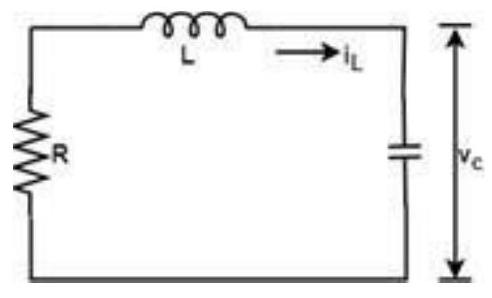

Unit-9: State Variable Analysis
State Space Model
The process by which the state of a system is determined is called state variable analysis.
Advantages of State Space Techniques
- This technique can be used for linear or nonlinear, time-variant or time-invariant systems.
- It is easier to apply where Laplace transform cannot be applied.
- The nth order differential equation can be expressed as 'n' equation of first order.
- It is a time domain method.
- As this is time domain method, therefore this method is suitable for digital computer computation.
- On the basis of the given performance index, this system can be designed for an optimal condition.
State Space representation of electrical system:
Consider an RLC network,
At time t=0
Current = $i_L(0)$
Capacitor Voltage = $V_c(0)$
Thus, the state of the network at time t=0 is specified by the inductor current and capacitor voltage.
Therefore $i_L(0)$ and $V_c(0)$ is called the initial state of the network and the pair $i_L(t)$, $V_c(t)$ is called the state of the network at 't'. The variable iL and vc are called the state variables of the network.
Apply KVL
Also,
From eq.1
From eq.2 (rearranged)
This type of equation is called State equation. And the variables present in this equation are called state variables.
Eq. 3 and Eq. 4 can be written in matrix form as
Let
Then equation 5 can be written as
Or, $\dot{x}(t)=A x(t)$
General State Space Form
The general form of state equation is
1. $\dot{x}(t)=Ax(t)+Bu(t) \quad \ldots \ldots \text{Eq.6}$
2. $y(t)=Cx(t)+Du(t) \quad \ldots \ldots \text{Eq.7}$
Y = n- dimensional output vector
U = r-dimensional control vector or input vector
A = n × n system matrix
B = n × r control matrix
C = p × n output matrix
D = p × r feedforward matrix
When there is no direct connection between input and output in that case D u(t) is not taken (i.e., D=0).
State Equation:
Output Equation:
State Space Representation of nth order differential Equation
For the nth order differential equation
Example 1
A system is described by the differential equation
Where y is the output and u is the input to the system. Obtain the state space representation of the system.
Solution
Let $x_{1}=y, x_{2}=\dot{y}$ and $x_{3}=\ddot{y}$ then
Rearranging the original equation to solve for $\dddot{y} = \dot{x}_3$:
And the last equation will be
In matrix form:
Now comparing Eq. 6 and above equation
The output equation is $y = x_1$. In matrix form:
State variable analysis: Examples with explanation
Let's first discuss a small introduction about the state variables before proceeding with the examples.
State means a set of variables whose knowledge helps us to predict the behaviour of the control system. The state variable with the input functions provides the future state and the output of the system. The elements of the state variable analysis include state vector, state space, state equations, and the state variable representation.
The state variables are the n variables needed to describe the system's behaviour, and the state axis is the area where coordinate axes are described. Similarly, state equations are the set of n equations, and state variable representation is described in terms of state variables, such as x1(t), x2(t), and so on. The system's input, output, initial conditions, etc., is described in terms of these elements.
Here, we will discuss the examples in the form of Multiple Choice Questions because they will help us in the competitive exams.
Example 1:
A system is described by the state equation $X' = AX + BU$. The output is given by $Y = CX$, where
And $C = \begin{bmatrix} 1 & 0 \end{bmatrix}$
The transfer function of the system is:
- $s/(s^2 + 5s + 7)$
- $2s/(s^2 + 5s + 7)$
- $1/(s^2 + 5s + 7)$
- $s/(s^2 + 3s + 5)$
Answer: (a) $s/(s^2 + 5s + 7)$
Explanation: The equation to find the transfer function of the system is given by:
Where,
I is always an identity matrix. D=0 as it's not given.
Computing the values of A, B, I, and C in the above equation, we get:
$SI - A = s\begin{bmatrix} 1 & 0 \\ 0 & 1 \end{bmatrix} - \begin{bmatrix} -4 & -1 \\ 3 & -1 \end{bmatrix} = \begin{bmatrix} s+4 & 1 \\ -3 & s+1 \end{bmatrix}$
Inverse: $[SI - A]^{-1} = \frac{1}{\det(SI-A)} \text{adj}(SI-A)$
$\det(SI-A) = (s+4)(s+1) - (1)(-3) = s^2 + 5s + 4 + 3 = s^2 + 5s + 7$
$\text{adj}(SI-A) = \begin{bmatrix} s+1 & -1 \\ 3 & s+4 \end{bmatrix}$
Transfer function = $C [SI - A]^{-1} B$
Thus, the correct answer is an option (a).
Example 2:
Find the sum of the Eigen values of the matrix given below:
- 15
- 12
- -10
- 10
Answer: (d) 10
Explanation: The shortcut approach to find the sum of the Eigen values is to add the elements present in the diagonal of the given matrix (Trace of the matrix).
The diagonal elements are 2, 1, 3, and 4. It sum is equal to $2 + 1 + 3 + 4 = 10$
Hence, the correct answer is 10.
Example 3:
A system represented by the equations is given by:
And $Y = \begin{bmatrix} 1 & 0 \end{bmatrix} x$
Find the equivalent transfer function of the system.
- $s/(s^2 + 3s + 3)$
- $1/(s^2 + 3s + 2)$
- $5/(s^2 + 5s + 2)$
- $2/(s^2 + 3s + 5)$
Answer: (b) $1/(s^2 + 3s + 2)$
Explanation: The equation to find the transfer function of the system is given by:
Where D=0.
$SI - A = s\begin{bmatrix} 1 & 0 \\ 0 & 1 \end{bmatrix} - \begin{bmatrix} 0 & 1 \\ -2 & -3 \end{bmatrix} = \begin{bmatrix} s & -1 \\ 2 & s+3 \end{bmatrix}$
$\det(SI-A) = s(s+3) - (-1)(2) = s^2 + 3s + 2$
$\text{adj}(SI-A) = \begin{bmatrix} s+3 & 1 \\ -2 & s \end{bmatrix}$
Transfer function = $C [SI - A]^{-1} B$
Example 4:
The observability condition in the state space representation can be determined with the condition given by:
- $[C^T \quad A^T C^T \quad (A^T)^2 C^T \dots]$
- $[B^T \quad A^T B^T \quad (A^T)^2 B^T \dots]$
- $[A^T \quad A^T C^T]$
- None of these
Answer: (a) $[C^T \quad A^T C^T \quad \dots (A^T)^{n-1}C^T]$
Explanation: The observability condition can be determined from the condition matrix $O = [C^T \quad A^T C^T \quad \dots \quad (A^T)^{n-1}C^T]$. The system is observable if the rank of this matrix is n.
Example 5:
The system model given by the equation is:
$Y'=\begin{bmatrix} 1 & 1 \end{bmatrix} x$
Consider $Y=\begin{bmatrix} 1 & 1 \end{bmatrix} x$
- Controllable
- Observable
- Both (a) and (b)
- Neither (a) nor (b)
Answer: (c) Both (a) and (b)
Explanation: We know that the equation is represented in the form of $AX + BU$.
By comparing, we get:
$C = \begin{bmatrix} 1 & 1 \end{bmatrix}$
The controllability of the given state equation can be checked by forming the matrix $[B \quad AB]$. The observability of the given state equation can be checked by forming the matrix $[C^T \quad A^T C^T]$. If the determinant of these matrixes is not equal to zero (for n=2), it is said to observable or controllable.
Controllability matrix: $M_c = [B \quad AB]$
$AB = \begin{bmatrix} 0 & 1 \\ 2 & -3 \end{bmatrix} \begin{bmatrix} 0 \\ 1 \end{bmatrix} = \begin{bmatrix} 1 \\ -3 \end{bmatrix}$
The determinant of the above matrix is: $(0)(-3) - (1)(1) = -1$
It is not equal to 0. Hence, the matrix is controllable.
Now, let's check for observability.
Observability matrix: $O = [C^T \quad A^T C^T]$
$C^T = \begin{bmatrix} 1 \\ 1 \end{bmatrix}$
$A^T = \begin{bmatrix} 0 & 2 \\ 1 & -3 \end{bmatrix}$
$A^T C^T = \begin{bmatrix} 0 & 2 \\ 1 & -3 \end{bmatrix} \begin{bmatrix} 1 \\ 1 \end{bmatrix} = \begin{bmatrix} 2 \\ 1-3 \end{bmatrix} = \begin{bmatrix} 2 \\ -2 \end{bmatrix}$
The determinant of the above matrix is: $(1)(-2) - (2)(1) = -2 - 2 = -4$
It is not equal to 0. Hence, the matrix is observable.
Thus, the system model described by the given state equation is both controllable and observable.
Example 6:
The state of a system equation can be written in the form of:
- First order differential equation
- Second order differential equation
- Third order differential equation
- None of the above
Answer: (a) First order differential equation
Explanation: The state of a system equation is written in the form of first order differential equation using the state variables x1, x2, x3 ... xn.
Example 7:
A LTI system is described by the state model given by:
Find if the system is:
- Completely controllable
- Completely observable
- Not completely controllable but completely observable
- Not completely observable but completely controllable
Answer: (c) Not completely controllable but completely observable
Explanation: The controllability of the given state equation can be checked by forming the matrix $[B \quad AB]$. The observability of the given state equation can be checked by forming the matrix $[C^T \quad A^T C^T]$.
We will use the above two conditions to determine controllability and observability.
We can check either the determinant or the rank of the formed matrix. If the determinant of these matrixes is not equal to zero, it is said to observable or controllable. If the rank of the matrix is equal to its order, it is said to be observable or controllable.
Let's start.
By comparing the given state model, the parameters are:
$C = \begin{bmatrix} 1 & 2 \end{bmatrix}$
Now, the matrix $[B \quad AB]$ is given by:
$AB = \begin{bmatrix} -1 & 0 \\ 0 & -2 \end{bmatrix} \begin{bmatrix} 0 \\ 1 \end{bmatrix} = \begin{bmatrix} 0 \\ -2 \end{bmatrix}$
The determinant of the above matrix is equal to $(0)(-2) - (0)(1) = 0$. Hence, it is not completely controllable. We can also say that the rank of the matrix (1) is not equal to its order (2).
Now, the matrix $[C^T \quad A^T C^T]$ is given by:
$A^T C^T = \begin{bmatrix} -1 & 0 \\ 0 & -2 \end{bmatrix} \begin{bmatrix} 1 \\ 2 \end{bmatrix} = \begin{bmatrix} -1 \\ -4 \end{bmatrix}$
The determinant of the above matrix is not equal to $(1)(-4) - (-1)(2) = -4 + 2 = -2$. Hence, it is completely observable. We can also say that the rank of the matrix (2) is equal to its order (2).
Thus, the given state model is completely observable but not completely controllable.